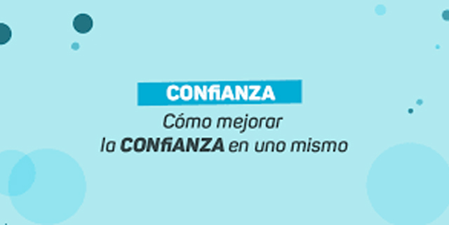

COACHING PARA TU TRANSFORMACIÓN PERSONAL Y ORGANIZACIONAL
COACHING PERSONAL
Hay días en donde uno se pierde y le gustaría parar, descansar y volver con fuerzas a encontrar el rumbo.
No me siento bien, deseo salir de este estado y sentirme tan bien como antes.

Deseo hacer grandes cosas, pero no confío en mí.
Deseo llevarme mejor con las personas que quiero; discuto por casi todo.
No soy capaz a de decir que no, me canse de sentirme víctima, las obligaciones son una carga muy pesada, no quiero que los demás piensen de mí…., me cuesta confiar en los demás…
Me cuesta pedir, soy muy impaciente, no soporto la impuntualidad…